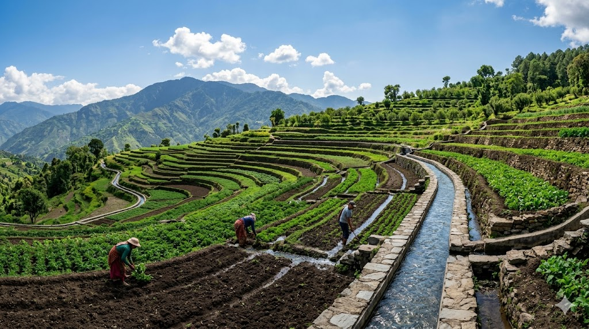
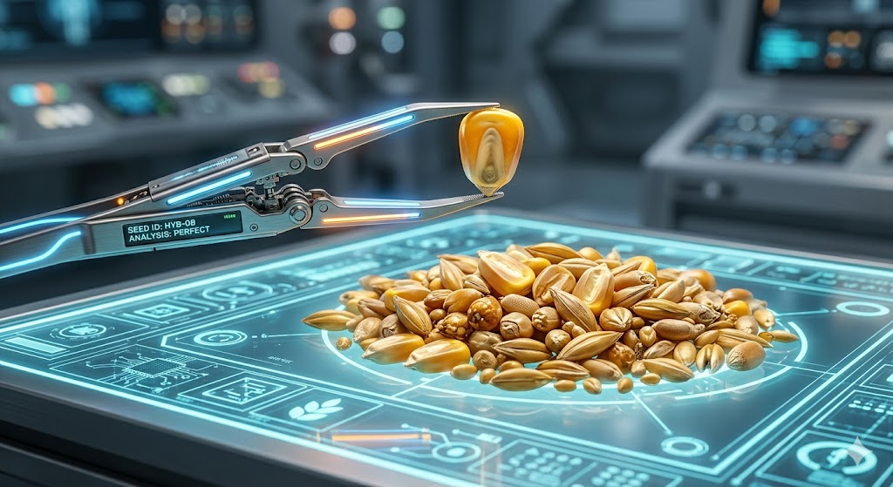

Soil and Water Conservation
Mitti ke katav (Soil Erosion) ko rokne ke tarike, water harvesting techniques, aur terracing ke baare mein detail mein padhein. Yeh subject agriculture engineering ka ek bahut zaroori hissa hai.

Manures, Fertilizers & Soil Fertility Mgt.
Organic khad aur chemical fertilizers ke behtar istemal se fasal ki paidawar aur mitti ki upjaau shakti (fertility) badhane ki deep knowledge haasil karein.

Fundamentals of Plant Pathology
Fasalon mein lagne wali bimariyon ke kaaran jaise Fungi, Bacteria aur Viruses ko samjhein. Disease cycle aur in bimariyon ke prabandhan (management) ka complete study material.

Fundamentals of Horticulture
Phalon (Pomology), Sabziyon (Olericulture), aur Phoolon (Floriculture) ki kheti ke basic siddhant. Bagwani ki aadhunik takneekon ko bariki se samajhne ka sunehra mauka.

Principles of Seed Technology
Beej utpadan, seed processing, testing, aur certification ke rules. Ek behtar quality ke beej ko kisan tak pahunchane ki poori scientific process ko asaan bhasha mein padhein.

Fundamentals of Ag. Extension Education
Kheti ki nai takneekon aur laboratory ki research ko seedhe kisano (farmers) tak pahunchane ka tareeqa. Rural sociology aur communication skills ka complete syllabus.

Livestock Production and Management
Pashupalan (Animal Husbandry) jisme dairy animals, poultry, aur unke nutrition, housing, aur diseases ke baare mein vistar se jankari di gayi hai.

Agri-informatics & Computer Application
Agriculture mein Information Technology (IT) aur computer ka istemal. Data management, crop modeling, aur digital farming technologies ke latest tools aur techniques.

Agricultural Heritage
Hindustan mein kheti ka itihas (History of Agriculture). Prachin kal se lekar aaj tak krishi pranaliyo (farming systems) mein aaye badlaav aur paramparik gyan ka anokha adhyayan.

Fundamentals of Crop Physiology & Taxonomy
Paudhon ke andar hone wali prakriyaon jaise Photosynthesis (Prakash Sanshleshan), Respiration aur paudhon ke vargikaran (Taxonomy) ke mool siddhant.